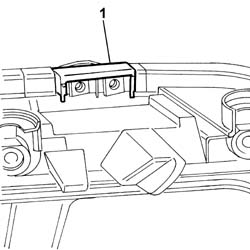
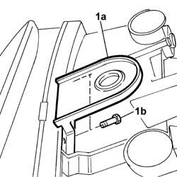

5540B84 Upper BRACKET fastening (one), front light cluster left or right, to the bodyshell - Replace. with light cluster removed
- Path
- Procedures > 55 ELECTRICAL EQUIPMENT > 5540 EXTERIOR LIGHTING > 5540B headlamps > 5540B84 Upper BRACKET fastening (one), front light cluster left or right, to the bodyshell - Replace. with light cluster removed
- Kind
- repair procedure (removal / refitting; the operation number is the code)
- Applies to
- all engines; all production periods
- Interactive page
- https://sloeber94.github.io/elrnDB-fDbl/en/#/2584941
Applies to: all engines; all production periods
1. Remove both edges of the damaged bracket and reface the attachment surface at the light cluster.

Applies to: all engines; all production periods
1. Fit the lock (1a) and secure using bolts (1b).
